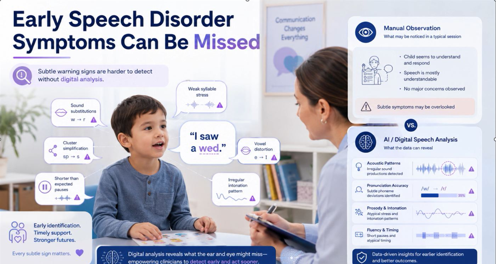
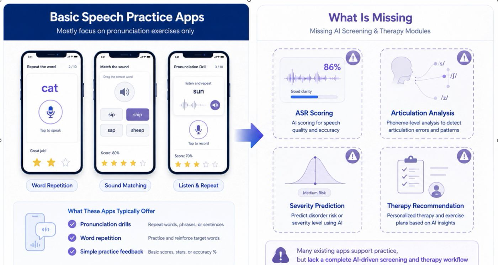
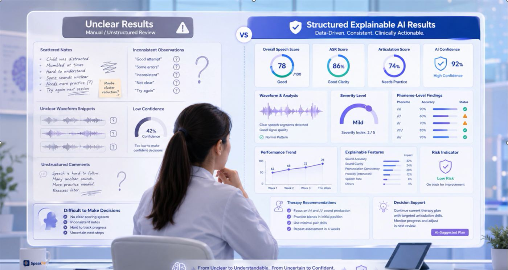
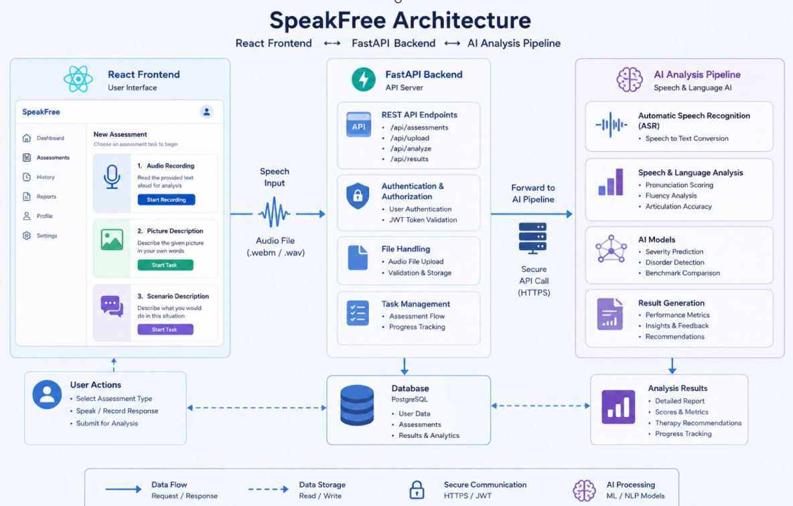
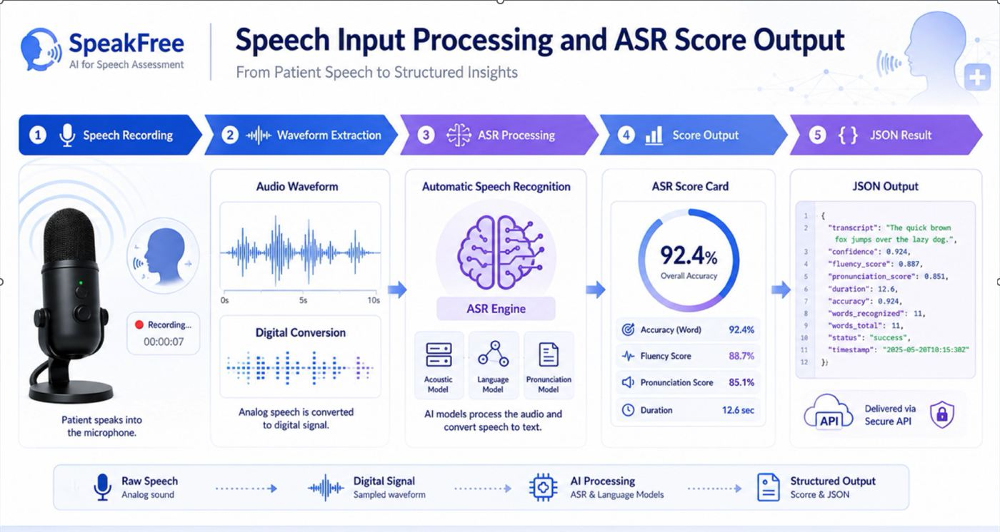
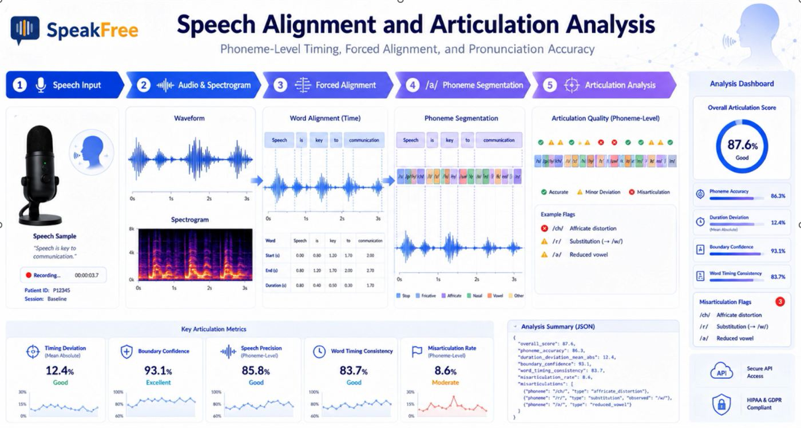
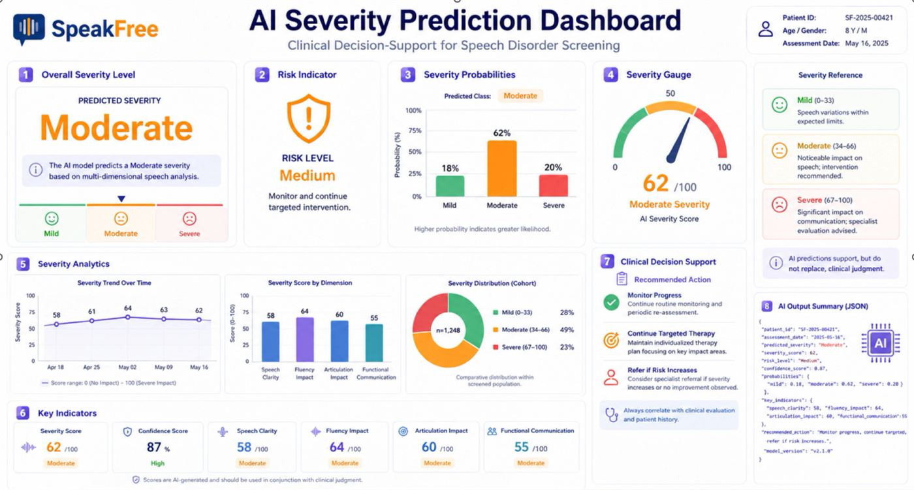
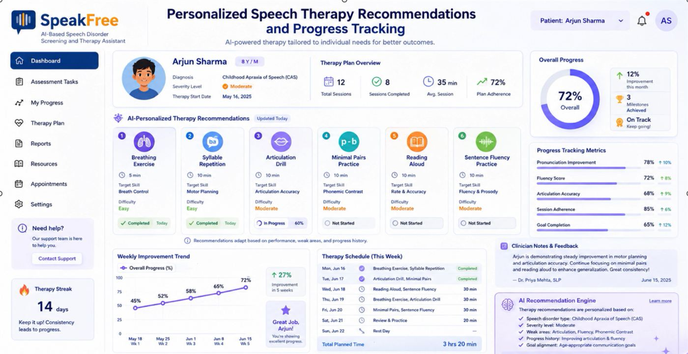

- Home
- Domain
Domain
The background, literature and methodology behind SpeakFree's four research components.
Where existing tools fall short
Automatic speech recognition systems such as Whisper are trained predominantly on fluent speech. On speech containing stuttering, blocks or atypical articulation, reported word error rates climb to 60 to 80 percent. That makes fluency metrics derived naively from a transcript (words per minute, articulation rate, dysfluency density) unreliable exactly where they matter most.
Dedicated stuttering event classifiers, for example models trained on the SEP-28k dataset, improve event level detection but need labelled, disorder specific data that is scarce and expensive to collect. Existing consumer and clinical screening tools are almost always evaluated only in clean, lab recorded conditions, so their behaviour in noisy, real world environments is largely unverified.
Screening protocols built around a single elicitation task, typically reading a fixed passage aloud, are also known to underestimate severity in speakers whose fluency varies across conversational, descriptive and read aloud contexts.

What no existing system handles together
Most speech practice apps focus on pronunciation drills, word repetition and simple star based feedback. Manual review produces scattered notes and inconsistent observations. Neither delivers a complete, explainable screening and therapy workflow.


| Capability | Manual screening | Basic practice apps | SpeakFree |
|---|---|---|---|
| Confidence aware ASR scoring on disordered speech | No | Limited | Yes |
| Phoneme level articulation analysis | Expert dependent | No | Yes |
| Severity prediction with probabilities | Subjective | No | Yes |
| Personalised, adaptive therapy plan | Manual | No | Yes |
| Explainable, structured results | No | No | Yes |
| Evaluated on noisy, browser recorded audio | Not applicable | Rarely | Yes |
| Therapist correction of automated scoring | Not applicable | No | Yes |
- No system combines confidence aware ASR with acoustic feature extraction specifically to keep fluency metrics clinically meaningful when transcription itself is unreliable.
- No evaluation of a screening pipeline exists under realistic, noisy, browser recorded conditions rather than curated lab audio.
- No integrated platform carries a user from initial screening through articulation analysis, severity classification and ongoing privacy preserving therapy support in one system.
- Few home practice tools let a therapist's expert judgement actually correct an automated scoring model, rather than treating it as a one off satisfaction survey.
One problem, four sub problems
The overall problem is addressed through four interdependent sub problems, one per team member:
Noise robust feature extraction
How can fluency metrics stay clinically meaningful when ASR is unreliable on disordered, noisy speech?
Phoneme level articulation analysis
How can articulation errors be located and classified accurately at the phoneme level?
AI based severity prediction
How can fluency and articulation signals be fused into a reliable, explainable severity level?
Privacy preserving therapy support
How can home therapy adapt to each user while staying correctable by experts and protecting privacy?
Main and specific objectives
| Component | Specific objective |
|---|---|
| 1, Screening and ASR | Develop a confidence aware ASR and noise robust feature extraction pipeline that keeps fluency metrics clinically meaningful on disordered, real world speech. |
| 2, Articulation | Develop phoneme level forced alignment and articulation error detection on top of Component 1's clean speech features. |
| 3, Severity | Develop an AI model that classifies overall speech disorder severity reliably and explainably from the upstream fluency and articulation signals. |
| 4, Therapy | Develop a privacy preserving, expert correctable adaptive learning module for personalised home therapy and progress tracking. |
A design science, component integrated approach
The project follows a design science methodology. Each component is a working software artefact, evaluated against its design intent through automated testing, manual end to end scenarios and, for Component 4, a structured expert rating and recalibration workflow. Components are developed independently against an agreed JSON interface contract and integrated in scheduled sessions, with session identifiers linking a single screening session's results across all four components.
System architecture
A React frontend records the speech tasks and sends the audio (.webm or .wav) to a FastAPI backend, which handles authentication, file validation and task management, stores data in PostgreSQL and forwards the audio over a secure HTTPS call to the AI analysis pipeline.

Speech input processing and ASR score output
- Speech recording
- Waveform extraction
- ASR processing
- Score output
- JSON result
Speech is captured in the browser, denoised and segmented with voice activity detection. Whisper produces the transcript and confidence, while HuBERT embeddings and Librosa acoustic features keep fluency measures meaningful even when the transcript is unreliable.
Output: word accuracy, fluency score, pronunciation score and duration, delivered as structured JSON through a secure API.

Speech alignment and articulation analysis
- Speech input
- Audio and spectrogram
- Forced alignment
- Phoneme segmentation
- Articulation analysis
Words and phonemes are force aligned to the audio so each sound has a start time, end time and boundary confidence. Each phoneme is then rated as accurate, a minor deviation or a misarticulation.
Output: phoneme accuracy, timing deviation, boundary confidence, word timing consistency, misarticulation rate and flags such as /r/ to /w/ substitution or affricate distortion.

AI severity prediction and decision support
Fluency and articulation features are fused to predict a severity class (Mild 0 to 33, Moderate 34 to 66, Severe 67 to 100) with class probabilities, a 0 to 100 severity score and a confidence value.
Dimension scores for speech clarity, fluency impact, articulation impact and functional communication drive a risk level and a recommended action. Predictions support, but do not replace, clinical judgement.

Personalised therapy recommendations and progress tracking
A contextual bandit planner selects exercises (breathing, syllable repetition, articulation drills, minimal pairs, reading aloud and sentence fluency) based on disorder type, severity, weak areas and progress history.
An expert recalibratable scoring model lets clinicians correct automated scores, a conversational assistant guides home practice, and differential privacy protects cohort reports shared with therapists.

Shared and component specific technology stack
Speech and machine learning
Speech recognition, embeddings, acoustic features and model training.
Backend
REST API, background processing and validation.
Frontend
In browser recording and the assessment interface.
Data, security and collaboration
Storage, secure communication and shared version control.